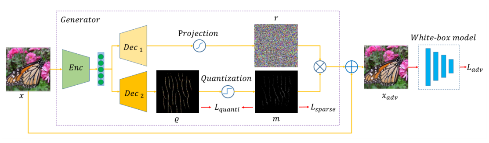
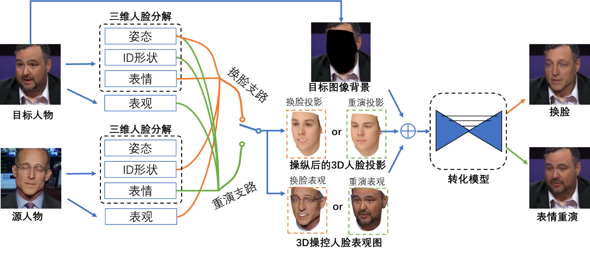
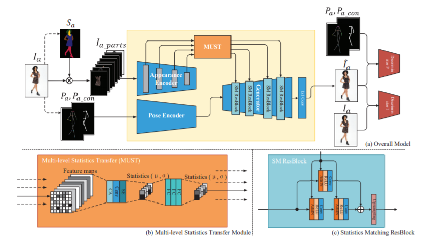
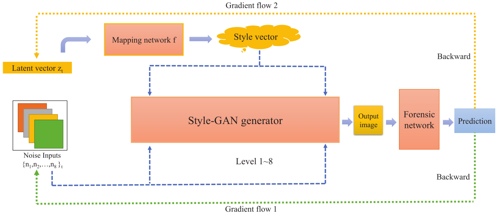
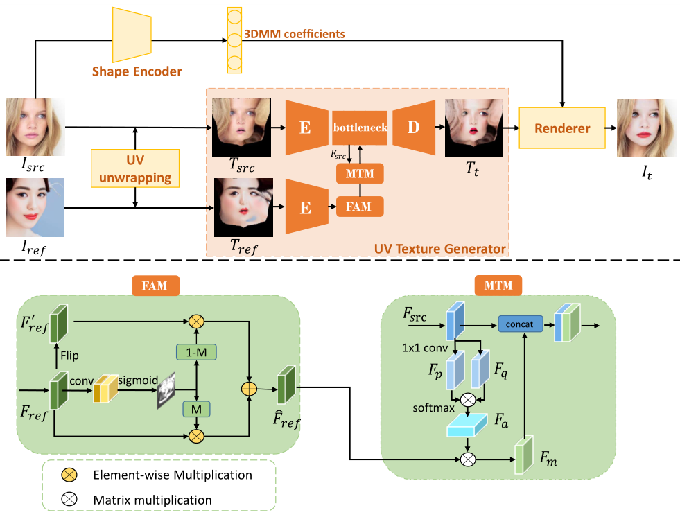
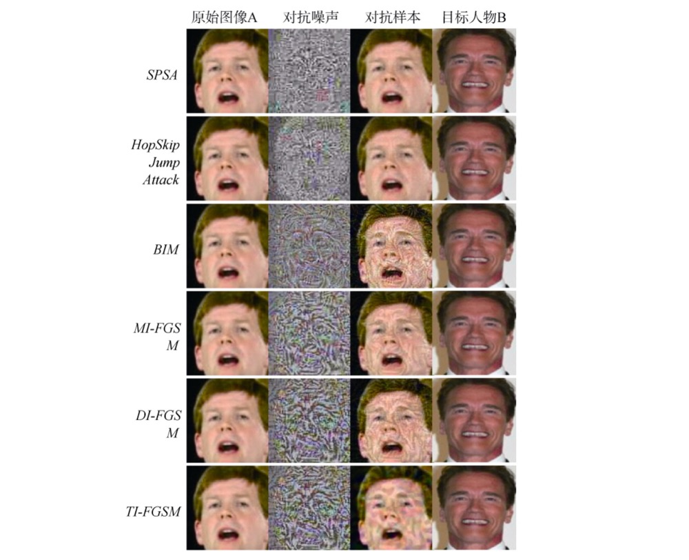
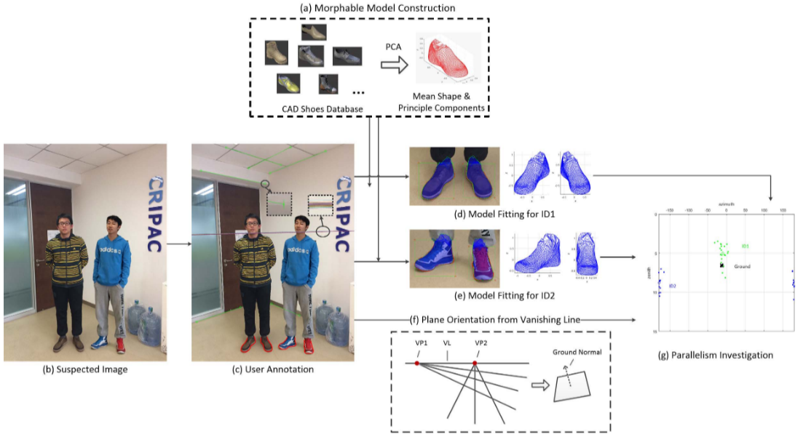

|
Jing Dong
|
Biography
Dong Jing, Ph.D., researcher, doctoral supervisor, CSIG/CCF/IEEE senior member, Distinguished member of CAAI, member of the Youth Innovation Promotion Association of the Chinese Academy of Sciences, and candidate of the National High level Youth Talent Program. Currently, he serves as the director, deputy secretary-general, secretary-general of the Women's Working Committee of the Chinese Society of Graphic Graphics (CSIG), executive member of IEEE Asia Pacific, chairman of the Award Committee, and chairman of the development of global members of IEEE Signal Processing Association. She is mainly engaged in technological research in cutting-edge fields such as artificial intelligence security and adversarial, computer vision, and multimedia content forensics. She has undertaken four National Natural Science Foundation projects, three national key research and development projects, one national major project sub project of the Ministry of Industry and Information Technology, and more than 20 provincial and ministerial level scientific research projects as the project (sub project) leader. Published over 100 academic papers in international authoritative journals and conferences, and has been granted 30 Chinese patents, including 3 US patents. She has won four best (excellent) paper awards, 2016 IBM Academy Award, 2019 China Artificial Intelligence Society Outstanding Contribution Award, 2020 CSIG Shi Qingyun Female Scientist Award, 2021 Beijing Youth Outstanding Scientific and Technological Paper Award, 2021 CSIG Science and Technology Award Second Prize (ranking first), 2021 Wu Wenjun Artificial Intelligence Science and Technology Award (technology progress and popular science category), 2022 China Invention Association Entrepreneurship and Innovation Award First Prize (ranking first), 2022 SARFT MediaAIAC Competition Deep Synthesis Technology Application First Prize (ranking first), 2023 Wu Wenjun Artificial Intelligence Science and Technology Award (technology invention first prize, ranking second) and the first prize of the 2024 National Big Data and Computing Intelligence Challenge (ranking first).
Experience
Research Fellow
Institute of Automation, Chinese Academy of Sciences
Mar 2022 – Present, Bei JingAssociate Research Fellow
Institute of Automation, Chinese Academy of Sciences
Nov 2017 – Feb 2022, Bei JingAssistant Research Fellow
Institute of Automation, Chinese Academy of Sciences
Jul 2012 – Oct 2017 Bei Jing
Education
|
|
Institute of Automation, Chinese Academy of Sciences Doctor, 2005-2010 |
 |
Central South University Bachelor, 2001-2005 |
Selected Publications
|  |
Transferable Sparse Adversarial Attack |
|  |
A Unified Framework for High Fidelity Face Swap and Expression Reenactment |
|  |
MUST-GAN: Multi-level Statistics Transfer for Self-driven Person Image Generation |
|  |
Exploring Adversarial Fake Images on Face Manifold |
|  |
SOGAN: 3D-Aware Shadow and Occlusion Robust GAN for Makeup Transfer |
|  |
视觉对抗样本生成技术概述 |
|  |
Image Forensics Based on Planar Contact Constraints of 3D Objects |
Service
Executive Committee Member of IEEE Asia Pacific(R10)
Chair,IEEE R10 Humanitarian Technology Activities Committee Jan 2017Journal of information Security and Application, Associate Editor
Journal of information Security and Application Jan 2016 – Jan 2017Member of IEEE MGA Vtools/WIE/HAC Committee
Director, Membership Development Committee, IEEE Signal Processing Society 2012-2013/2017-2018/2019-2022Asia-Pacific Signal and Information Processing Association(APSIPA), Multimedia Security and Forensics (MSF) Technical Committee member
Newsletter of International Association of Pattern Recognition (IAPR)
Editor-in-ChiefBeijing Institute of Image Graphics
Council Member Jan 2014 – Dec 2019Deputy Secretary General of China Artificial Intelligence Society
China Artificial Intelligence Society Jan 2014 – Dec 2019Member of Vision Committee of China Computer Society
China Computer Society Jan 2012Executive Committee of IEEE Beijing Section
IEEE Jan 2010 – Jan 2017Member of multimedia information security committee of communication branch of China Electronic Society
China Electronics Society Jan 2010
Projects
National Natural Science Foundation of China 61772529
National Natural Science Foundation of China U1636201
National key R & D plan 2016YFB1001003
National Natural Science Foundation of China 61303262 (already concluded)
National Natural Science Foundation of China U1536120 (already concluded)
National basic R & D plan 2012CB316300 (already concluded)
National key R & D plan 2012BAH04F02 (already concluded)
National Natural Science Foundation of China U1536110 (already concluded)
Open project of National Laboratory of pattern recognition 201600003 (already concluded)